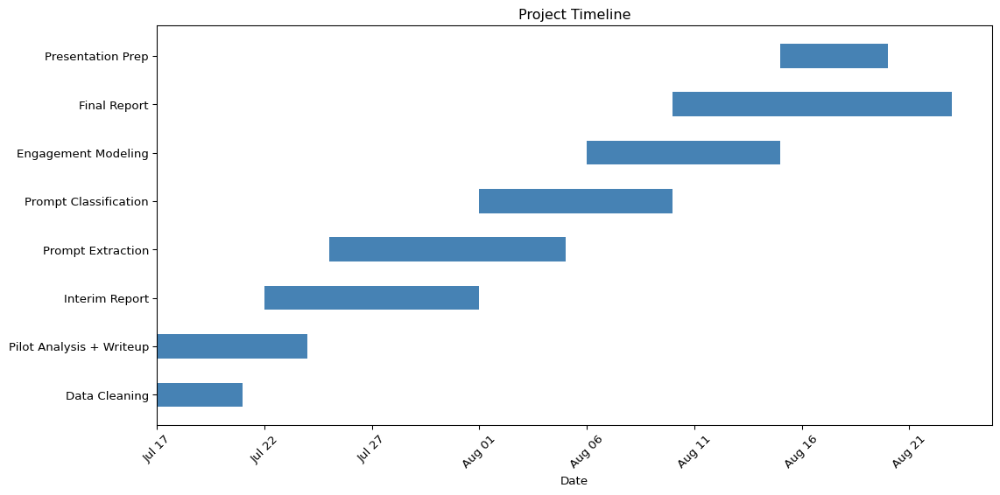

SENG-404 Proposal: Prompt Engineering and Project Engagement in LLM-Enabled Repositories
Evan Strasdin - V00907185
Git Link
Motivation
Large Language Models (LLMs) like GPT-4 are now central to many software systems, with open-source tools such as LangChain, AutoGPT, and llama.cpp enabling developers to build entire applications around model behavior. In these systems, prompts are not just inputs: they function as logic, guiding how the model reasons, responds, and performs tasks. As a result, prompt engineering has become a core software development activity.
Recent research has begun to formalize this space. Studies have introduced taxonomies of prompt types, such as zero-shot, few-shot, and chain-of-thought prompting (Zhou et al., 2024), and proposed metrics for evaluating prompt quality, including reasoning coherence (Li et al., 2023) and cost-efficiency (Diao et al., 2024). Other work has analyzed how prompts evolve over time in open-source repositories (Tafreshipour et al., 2024).
However, it remains unclear whether prompt characteristics, both in terms of type and engineering behaviors (such as complexity, reuse, or collaborative authorship), are associated with broader indicators of project activity and engagement, such as contributor count, issue resolution rate, or project growth.
This study addresses that gap by combining prompt classification with software repository mining. We will apply established prompt type categories and measure engineering-related characteristics such as length, example count, and contributor overlap. Where appropriate, we may explore additional quality metrics inspired by recent research. Our goal is to uncover whether observable prompt patterns relate to collaboration and development dynamics in real-world LLM-integrated projects.
\[ \sim\sim\sim \]
Research Question
Do prompt characteristics, such as type, complexity, reuse, and collaborative authorship, correlate with indicators of project activity and engagement in open-source LLM-integrated repositories?
We will analyze prompt artifacts extracted from public repositories and apply a combination of classification (for example, by prompt type) and metric-based evaluation (such as prompt length and contributor interaction). These features will be compared against repository-level signals of activity, including contributor count, issue resolution rate, and project growth over time.
\[ \sim\sim\sim \]
Expected Data Sources
Repository Selection (GitHub Search and GitHub API)
To identify candidate repositories for our study, we performed a keyword-based search over public GitHub code using the GitHub Search API. We designed a list of 30+ LLM-related keywords targeting common APIs, prompt engineering patterns, and framework imports, such as:
openai.ChatCompletion.create,PromptTemplate,RetrievalQA"prompt = ","system": "llama_cpp,AutoGPT,FAISS,transformers.pipeline, and others
For each keyword, we retrieved up to 250 results across 5 paginated requests (50 results per page). Each code match was associated with metadata including the repository name, file path, and matched keyword.
To rank repository relevance, we grouped results by repository and counted how many distinct keywords each repository matched. The rationale is that repositories containing multiple LLM-specific keywords are more likely to integrate structured prompt engineering practices rather than incidental mentions.
The output is saved in both .csv and .json formats under the /data directory:
The complete code for this data collection and early processing process is documented in data_sourcing.ipynb.
Project Metadata (GitHub API and GHTorrent)
To supplement our keyword-based prompt discovery with repository-level context, we retrieved metadata for each matched repository using the GitHub API.
For each repository, we collected:
- Stars, forks, watchers — as high-level proxies for community interest
- Open issues — to approximate project activity and maintenance
- Repository timestamps (
created_at,updated_at,pushed_at) — for lifecycle analysis - License, language, and description — to support filtering and categorization
- Default branch — required for linking to prompt files and future mining
This metadata was merged with our keyword-matching dataset (see combined_repository_data.csv), creating a unified view of prompt relevance and project health. The merged data is saved in both .csv and .json format to support both manual review and downstream analysis.
If time and scope allow, we may also incorporate contributor-level metrics (e.g. commit count, contributor overlap) and validate repository activity using GHTorrent to support scalable analysis beyond API rate limits.
Prompt Artifacts
Prompt strings will be extracted from relevant source files using a combination of static code parsing (e.g. Python AST), regex-based string analysis, and heuristics for identifying natural language input patterns. Prompts will be categorized by type using existing taxonomies (Zhou et al., 2024), and features such as length, example count, and reuse will be computed automatically. File-level and commit-level metadata will be retained for all prompt artifacts.
Optional: Software Heritage Graph
If time and tooling permit, the Software Heritage Graph will be used to trace prompt files across forks and versions, allowing us to observe reuse and evolution beyond a single repository.
\[ \sim\sim\sim \]
Research Strategy
Tools and Dependencies
| Tool / Framework | Purpose | Familiarity | Cost / Access |
|---|---|---|---|
| GitHub API | Repository metadata and file access | High | Free (rate-limited) |
| Jupyter + Python stack | Data processing and analysis (pandas, seaborn, etc.) |
High | Free |
| Quarto | Reproducible reports and publication output (PDF, HTML) | High | Free |
| LaTeX | Typesetting for the written report and PDF export | High | Free (via Overleaf or local TeX) |
| R | Statistical modeling or specialized visualization | Moderate | Free |
| GitHub Copilot Chat | Code completion, analysis automation | High | $10/month (covered by user) |
| GHTorrent (optional) | Supplemental repo metadata at scale | Low | Free |
| Software Heritage (optional) | Track prompt reuse and code lineage | Low | Free |
Preliminary Validation: Pilot Analysis
To assess the reliability and relevance of our keyword-based repository selection, we conducted a series of exploratory analyses on the merged dataset, described in ../../src/pilot/pilot.qmd. These pilot experiments served to validate the feasibility of our research design and guide the selection of downstream analysis metrics.
Key Findings:
- Keyword Match Signal: While a majority of repositories matched only a single LLM-related keyword, a substantial number exhibited 2+ matches—suggesting deeper integration of prompt-related logic. We use keyword count as a proxy for LLM integration intensity.
- Engagement Metrics: Repository engagement (stars, forks, watchers) showed wide variance across the sample, and log-transformed engagement distributions were suitable for analysis. This supports the use of these metrics as comparative signals for relevance and community interest.
- Weak Correlation Observed: A preliminary analysis found a weak positive correlation between the number of LLM-related keywords and a composite engagement score (Pearson’s r ≈ 0.07). This suggests that while there may not be a linear relationship, deeper patterns could emerge with prompt-level analysis.
- Temporal Coverage: The majority of repositories were created after 2020, with a sharp increase in 2023–2024, coinciding with the surge in public interest in LLMs. This confirms that our sample reflects contemporary LLM development practices.
- Keyword Patterns: Certain keywords—such as
"prompt=","system",ChatOpenAI, andPromptTemplate—appeared with high frequency, and some showed stronger presence in high-engagement repositories. These patterns can inform our prompt classification strategy.
These initial results confirm that our keyword-matching and metadata pipeline successfully surfaces a diverse set of LLM-relevant repositories, suitable for further analysis. The pilot also helped us calibrate the importance of each metadata feature, refine our engagement scoring strategy, and identify prompts for extraction.
\[ \sim\sim\sim \]
Methodology and Timeline
Project Task Breakdown and Timeline Rationale
This timeline outlines the major components of the project, from early analysis to final presentation. Each task is scheduled based on its dependencies and estimated effort, with built-in buffer time to accommodate review and refinement.
1. Data Cleaning (July 17–21)
While I completed the core data collection earlier (GitHub keyword scraping and repository metadata extraction), this stage involves sanitizing the dataset: Handling missing values, normalizing timestamp formats, and verifying repository uniqueness. I will likely attempt to augment the data as discussed.
Estimated time: ~5 days to ensure a clean, reliable dataset before analysis.
2. Pilot Analysis + Writeup (July 17–24)
I began exploratory analysis on July 17 to validate that my keyword-matching strategy effectively surfaces LLM-relevant repositories. This includes visualizing keyword density, engagement metrics, and identifying early patterns. I’m also producing a formal writeup for inclusion in the interim report.
Estimated time: ~1 week to complete analysis and documentation.
3. Interim Report (July 22–August 1)
The interim report will summarize my progress so far, justify my approach, and include new findings as needed. It will also outline new tools, feasibility, and methodology moving forward.
Estimated time: ~10 days to allow for drafting, editing, and submission.
4. Prompt Extraction (July 25–August 5)
I will extract actual prompt strings from the matched files using static code parsing, regex, and heuristics. This step is critical, as it forms the foundation for all downstream prompt classification and metric calculations.
Estimated time: ~10 days for implementation, testing, and validation.
5. Prompt Classification (August 1–10)
Once prompts are extracted, I’ll classify them according to prompt engineering taxonomies (e.g., zero-shot, few-shot, chain-of-thought) and compute structural features such as length, number of examples, or use of system roles.
Estimated time: ~10 days, with some overlap with extraction to save time.
6. Engagement Modeling (August 6–15)
Here I’ll test whether different prompt characteristics are associated with engagement metrics (stars, forks, contributors, etc.). This will involve statistical modeling and visualization.
Estimated time: ~10 days for robust experimentation and interpretation.
7. Final Report (August 10–23)
This deliverable includes full documentation of the research question, data, methods, and results. It will be written in LaTeX (or Quarto?) with formal citations and polished visuals.
Estimated time: ~2 weeks, allowing time for writing, feedback, and formatting.
8. Presentation Prep (August 15–20)
I’ll develop slides, speaking notes, and visuals to clearly present my findings.
Estimated time: ~5 days for design and rehearsal.
Each task was scheduled to overlap with minimal dependencies while leaving room for unforeseen revisions. Emphasis was placed on frontloading the classification and modeling work to ensure the final report and presentation are built on a stable foundation of results.
Workflow Specification
This section outlines the planned end-to-end methodology for the project, from data acquisition to statistical analysis and presentation.
Data Sources
The study uses two layers of data:
- Keyword-Matched Repositories from the GitHub Search API, filtered using a curated set of 30+ LLM-related keywords.
- Repository Metadata from the GitHub REST API, including stars, forks, watchers, open issues, and timestamps.
Where feasible, supplemental metadata may be obtained from GHTorrent or Software Heritage to validate or extend API-based insights (especially for contributor history or prompt reuse across forks).
Filtering Criteria
- Keyword Count ≥ 2: Repositories with at least two distinct LLM-related keyword matches will be prioritized for downstream analysis, as they are more likely to meaningfully integrate prompt engineering.
- Language Filter: Initially limited to Python-based repositories (based on GitHub’s metadata), given tooling and LLM ecosystem alignment.
- Repository Status: Archived or empty repositories are excluded.
Prompt Extraction and Processing
- Prompt Detection: Static code parsing (AST), regex pattern matching, and structural heuristics will be used to extract prompt-like strings.
- Artifact Metadata: Each prompt will retain references to its source file, position, commit ID, and author (if available).
- Deduplication and Grouping: Near-duplicate prompts will be clustered to identify reuse and evolution across files or repositories.
Prompt Classification
- Prompts will be categorized using published prompt taxonomies:
- Zero-shot, Few-shot, Chain-of-thought, etc.
- Structural metrics will also be computed:
- Length (tokens/chars), number of examples, presence of system roles, etc.
- Where feasible, quality-related features from the literature may be computed (e.g., instruction clarity, verbosity, etc.).
Repository-Level Metrics
The following indicators will be computed per repository:
- Contributor count (if feasible)
- Engagement score (based on stars, forks, watchers — potentially log-normalized)
- Project longevity (based on creation vs last commit)
- Issue activity (if GHTorrent integration is successful)
Analysis and Validation
- Exploratory statistics and correlation matrices will be used to assess relationships between prompt-level features and engagement/activity metrics.
- Regression models (linear or logistic, depending on outcomes) may be used to model engagement predictors.
- If prompt authorship data is extractable, interaction analysis may be run to test whether prompt collaboration predicts broader project activity.
Timeline Consideration
Even though much of the raw data is already acquired, writing reliable extraction and classification logic, validating features, and testing models is time-intensive. The planned timeline includes several overlapping stages and buffer zones to accommodate iteration and debugging.
\[ \sim\sim\sim \]
Expected Results
Based on the preliminary pilot analysis and prior literature, I expect to find:
Stronger correlations at the prompt level: While pilot results showed only a weak correlation (r ≈ 0.07) between keyword count and engagement, more meaningful associations may emerge once detailed prompt-level features (e.g. structure, examples, contributor overlap) are extracted and classified.
Prompt complexity as an engagement signal: More advanced prompt types—such as few-shot or chain-of-thought—are expected to appear more often in high-engagement repositories, where LLMs are likely used in core logic.
Collaborative prompt authorship: Repositories with prompts that involve multiple contributors or edits may correlate with higher contributor counts and a more active issue tracker, suggesting prompt engineering as a shared, iterative process.
Prompt reuse and project maturity: Reused or versioned prompts may indicate maturity and intentional design practices, potentially correlating with longevity or stability metrics.
Temporal trends: Repositories created in 2023–2024 are expected to exhibit more sophisticated prompt structures, reflecting the broader adoption of LLM tooling and techniques during this period.
Overall, I expect that prompt characteristics will serve as useful signals of project complexity, collaboration, and developer engagement—validating their role as first-class engineering artifacts.
\[ \sim\sim\sim \]
Limitations
Several constraints may affect the strength or interpretability of the final results:
Weak correlation in early results: The pilot analysis revealed only a modest relationship between keyword count and engagement, indicating that high-level keyword matching may not fully capture the nuance of LLM integration. This raises the possibility that even prompt-level analysis might yield subtle or nonlinear associations.
GitHub API rate limits: Repository and contributor metadata are retrieved through the GitHub API, which imposes rate limits. This restricts the volume of data that can be gathered in a short time and may limit the diversity or completeness of the sample.
Noise and ambiguity in prompt detection: Extracting prompts from source code using static parsing and regex involves heuristics that may yield false positives (non-prompts) or miss edge cases (multi-line prompts, dynamic constructions). This could introduce noise in the classification phase.
Resource-intensive processing: Extracting, deduplicating, and classifying prompts across hundreds of repositories is computationally expensive and time-consuming, especially when maintaining file- and commit-level traceability.
Repository heterogeneity: Engagement metrics (e.g. stars, forks) are only rough proxies for real developer activity or quality. They may be influenced by external factors like social visibility, not just engineering practices.
Limited generalizability: The project is currently scoped to Python repositories matching specific LLM-related keywords. As a result, findings may not generalize to other languages or non-GitHub ecosystems.
Despite these limitations, the combination of pilot insights and structured prompt analysis provides a strong basis for exploring meaningful correlations between prompt engineering and real-world project dynamics.
\[ \sim\sim\sim \]
References
Tafreshipour, A., Salami, M., & Pradel, M. (2024). Prompting in the Wild: An Empirical Study of Prompt Evolution in Software Repositories. arXiv preprint arXiv:2412.17298
Zhou, W., Liu, J., & Sun, M. (2024). A Systematic Survey of Prompt Engineering in Large Language Models. arXiv preprint arXiv:2402.07927
Li, X., Zhang, S., & Chen, M. (2023). ROSCOE: A Benchmark for Reasoning Over Chain-of-Thought Explanations. arXiv preprint arXiv:2212.07919
Diao, W., Liu, Y., & Su, Y. (2024). Economical Prompting Index: Balancing Accuracy and Cost in LLM Prompts. arXiv preprint arXiv:2412.01690
\[ \sim\sim\sim \]
Disclaimer: Use of AI
I am a full-blown AI enthusiast and believe it is as or more important for humanity than the printing press. I use it for absolutely everything.
Formal Disclaimer
Portions of this proposal (initial topic brainstorming, paper identification, text drafting, coding, this paragraph) were generated with the assistance of OpenAI’s ChatGPT-4o. All content was critically reviewed, edited, and verified by the author. The model was used to drastically enhance productivity and clarity but not to replace original decision-making.